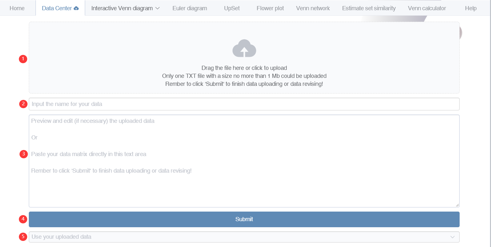
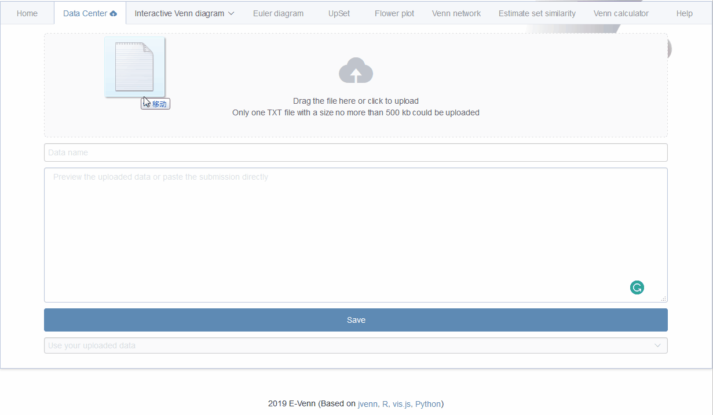
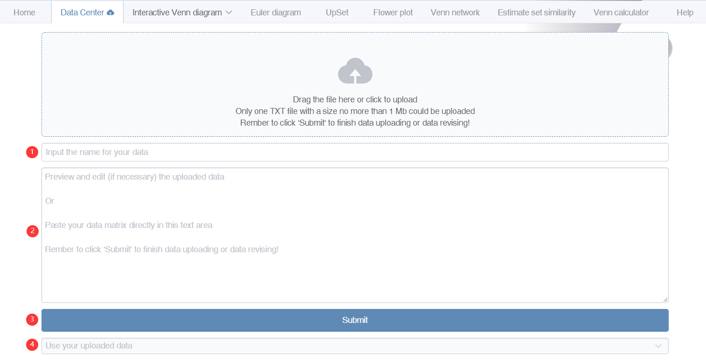
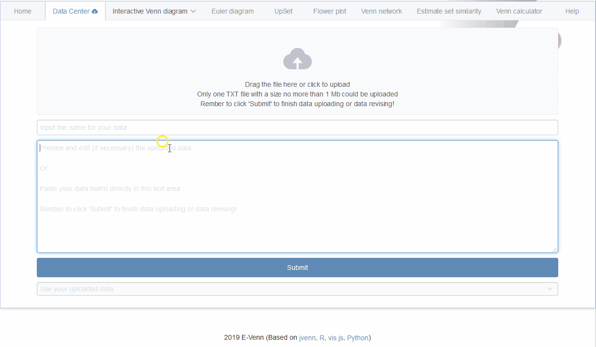

3 Upload files in data center
Attention: The files would not be uploaded to our server in this step. They only exist in a local region in your web browser. These uploaded files would be lost after the web browser is closed. Also, one could not see these uploaded data in other web browsers.
3.1 Upload a file
- Drag your file or click to upload your file (Fig 3.1 1 step).
- Input a name for your file for identification (Fig 3.1 2 step).
- The content of the uploaded file would be loaded into the text area (Fig 3.1 3 step). Users are allowed to browse and revise uploaded data if necessary.
- Remember to click Save or Submit to finish the uploading process (Fig 3.1 4 step).
- Then your uploaded file would be shown in the file selector (Fig 3.1 5 step). One can browse or delete unneeded files.

Figure 3.1: Upload your files.
Here is an animation showing the processes.

Figure 3.2: Animation showing uploading processes.
3.2 Paste your data here
- Input a name for your file for identification (Fig 3.3 1 step).
- Paste the data matrix to the text area (Fig 3.3 2 step).
- Remember to click Save or Submit to finish the saving process (Fig 3.3 3 step).
- Then your uploaded file would be shown in the file selector (Fig 3.3 4 step). One can browse or delete unneeded files.

Figure 3.3: Paste your files.
Here is an animation showing the processes.

Figure 3.4: Animation showing pasting as uploading.
3.3 Example files
If you accidentally clicked these files directly, use the back button on left-top corner of your web browser to return back.
- List of differentially expressed genes: DE_gene_file.txt (right click to save)
- Gene enrichment results: Gene_enrichment.txt (right click to save)
- List of high abundance OTUs in each group: High_abundance_OTU.txt (right click to save)
- List of high abundance taxonomy for many groups: taxonomy_highabundance_manysets.txt (right click to save)